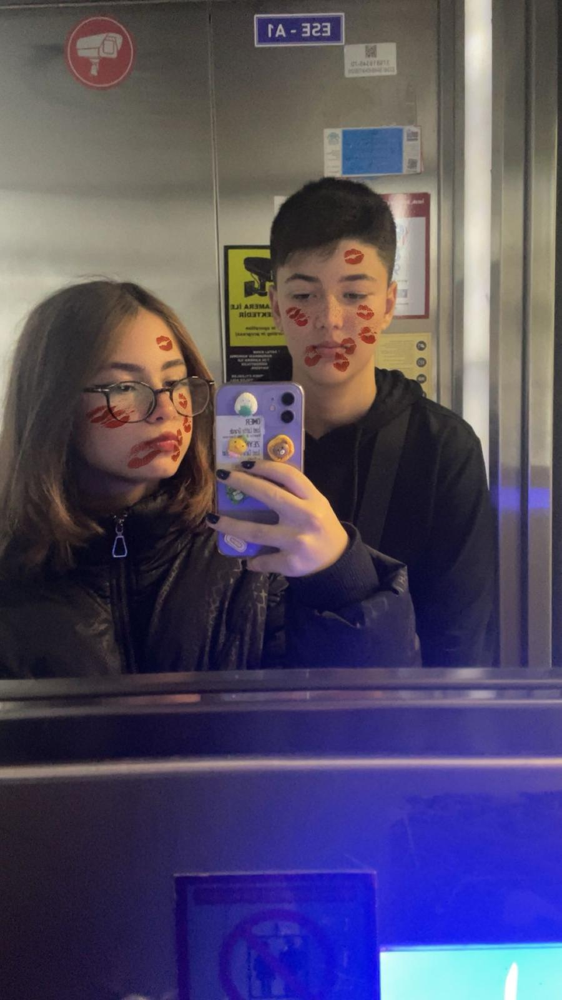

Zaman Geçiyor
00:00:00

"Ben Kafirler Şehrinde Yalnız Kalmış bir Müslümanım. "Sen Sesini Özlediğim Ezansın"
Sayfaya Bir İz Bırak

"Ben Kafirler Şehrinde Yalnız Kalmış bir Müslümanım. "Sen Sesini Özlediğim Ezansın"